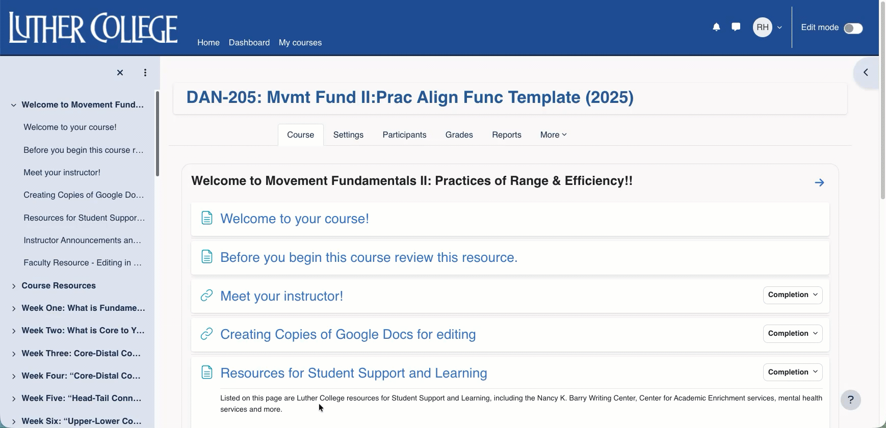

Faculty & SME Consultation
Asked questions, surfaced instructional priorities, and worked with faculty to connect their expertise to the learner experience.
Partnering with faculty and subject-matter experts to transform existing courses into purposeful, accessible, and engaging online learning experiences.
Effective online learning requires more than moving existing content into an LMS. The work with Luther College focused on understanding how course structure, activities, assessment, accessibility, and navigation could work together to better support learning.
Each engagement began with the instructional problem: What are students being asked to learn? Where might the current experience create unnecessary friction? And how can instructional design help faculty achieve their goals while creating a clearer experience for students?
I partnered with faculty and subject-matter experts to understand instructional goals, identify learner-experience challenges, and translate those needs into practical course and activity designs.
Asked questions, surfaced instructional priorities, and worked with faculty to connect their expertise to the learner experience.
Organized content, activities, expectations, and navigation so students could better understand what they were learning and what they needed to do next.
Translated instructional decisions into Moodle structures, activities, resources, and workflows that supported the intended learning experience.
Considered accessibility, captioning, learner clarity, multiple ways of engaging with content, and multiple ways of demonstrating learning.
The Luther work provided opportunities to apply instructional design across different disciplines, learning modalities, and course challenges. Three examples illustrate the range of the work.
The course contained substantial information and learning activities that could be made more coherent and easier for students to navigate.
I helped reorganize the experience around meaningful topics, clarify agendas and expectations, reduce unnecessary navigation, and strengthen the connection between objectives, activities, and outcomes.
Principles of cognitive load informed decisions about how information was organized and presented.
An existing Google Classroom course needed to become a more structured Moodle learning experience while preserving the instructor's instructional intent.
The redesign included Moodle course architecture, VoiceThread activities, knowledge checks, and an electronic lab notebook, supported by iterative conversations with the faculty SME.
Accessibility, captioning, and learner clarity were considered throughout the redesign.
Movement-based learning creates a distinctive instructional challenge: students need opportunities to practice, demonstrate, receive feedback, and reflect within an online environment.
The design incorporated video submissions, progressive assignments, peer feedback, lab logs, reflection, and rubrics to create multiple opportunities for practice and demonstration.
The student experience of creating and submitting work was considered alongside the instructional goals.
Faculty bring deep subject-matter expertise and a strong understanding of their discipline. My role was to help connect that expertise to the structure and experience of online learning.
Rather than imposing a predefined course model, I worked through questions, options, iterations, and design decisions with faculty to determine what would best support their instructional goals and their students.
The process was collaborative:
Listen → Analyze → Design → Test → Refine
Started with intended learning outcomes and worked backward to determine the experiences, activities, practice, and assessment needed to support them.
Considered how course organization, information presentation, and navigation could reduce unnecessary complexity and help students focus on learning.
Designed with accessibility and multiple pathways for engagement, representation, practice, and demonstration of learning in mind.
Broke complex learning into purposeful steps and created opportunities for practice, feedback, reflection, and progressive development.
A course can be technically complete and still create unnecessary friction for learners. I evaluated design decisions through the student's perspective: What is clear? What is confusing? What should happen next? Where does the learner need practice or feedback?
This meant treating navigation, instructions, accessibility, submission workflows, activity sequencing, and feedback as part of instructional design—not as separate technical details.
Across the selected engagements, instructional design helped strengthen course structure, learner navigation, engagement, accessibility, and alignment between what faculty wanted students to learn and what students were asked to do.
“Beyond his technical mastery, Richard's greatest strength lies in his collaborative approach. He conducts faculty consultations with empathy, patience, and clear vision. Drawing on his extensive experience in higher education he understands the faculty perspective deeply. He knows how to translate complex pedagogical goals into practical, high-quality e-learning assets while managing project timelines with remarkable efficiency.”
The BIO 243 redesign involved migrating an existing Google Classroom course into Moodle while building a more structured digital learning environment to complement in-person lecture and lab.
“Jodi has been very pleased with Rick's expertise in student-centered instructional design and his ability to make ideas and goals come to life through innovative digital course materials that effectively complement the in-person lecture and lab experience.”
Eric's letter reports that the instructor had already received unsolicited positive student feedback about the BIO 243 Moodle site. It also describes encouraging early observations about student preparation, group work, and test averages compared with at least the previous several years.
“Notably, Jodi has already received unsolicited student feedback about how much students are appreciating the Bio243 Katie site. Jodi is confident that the course redesign and digital infrastructure is contributing to a markedly improved student experience: student preparation for class, group work dynamics, and BIO 243 test averages so far are surpassing those from at least the last several years.”
Source: Eric Baack, Biology Department Chair, reporting on behalf of Jodi Enos-Berlage, PhD, Professor of Biology.
These are faculty-reported early observations; the letter describes the redesign as contributing to the results, not as the sole proven cause.
The strongest instructional design decisions often happen before a course is built—when we clarify the problem, understand the learner, partner with the SME, and determine what the experience needs to accomplish.
This work reinforced a central principle of my practice: instructional design is not simply about producing courses. It is about helping people make better decisions about how learning should work.
A course should help learners understand where they are, what matters now, and what to do next. This example shows how a structured course space can support orientation, predictable navigation, and a clearer learning journey.

The goal was not simply to move materials online. It was to make the course easier to understand, navigate, and use as a learning environment.